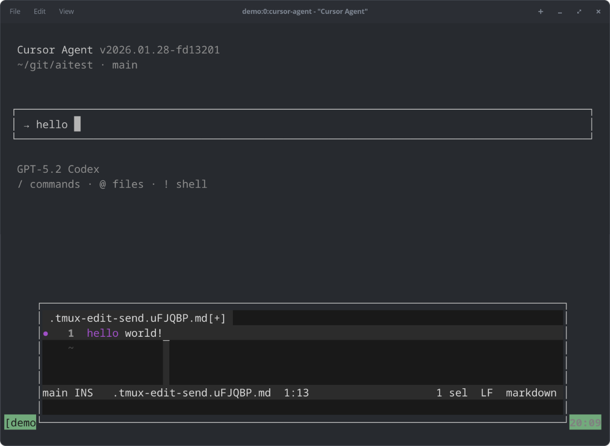
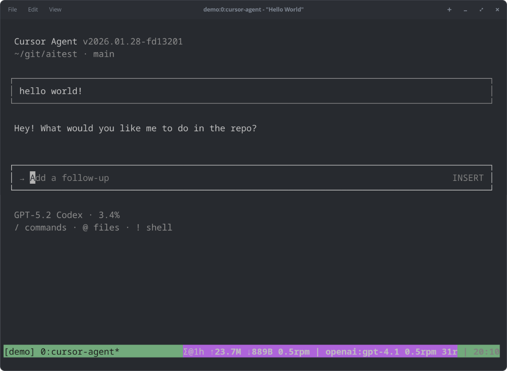

bind-key e run-shell -b "tmux display-message -p '#{pane_id}'
> /tmp/tmux-edit-target-#{client_pid} \;
tmux popup -E -w 90% -h 35% -x 5% -y 65% -d '#{pane_current_path}'
\"~/scripts/tmux-edit-send /tmp/tmux-edit-target-#{client_pid}\""
┌────────────────────┐ ┌───────────────┐ ┌─────────────────────┐ ┌─────────────────────┐
│ Cursor input box │-->| tmux keybind │-->| popup runs script │-->| capture + prefill │
│ (prompt pane) │ │ prefix + e │ │ tmux-edit-send │ │ temp file │
└────────────────────┘ └───────────────┘ └─────────────────────┘ └─────────────────────┘
|
v
┌────────────────────┐ ┌────────────────────┐ ┌────────────────────┐ ┌────────────────────┐
│ Cursor input box │<--| send-keys back |<--| close editor+popup |<--| edit temp file |
│ (prompt pane) │ │ to original pane │ │ (exit $EDITOR) │ │ in $EDITOR │
└────────────────────┘ └────────────────────┘ └────────────────────┘ └────────────────────┘

#!/usr/bin/env bash set -u -o pipefail LOG_ENABLED=0 log_file="${TMPDIR:-/tmp}/tmux-edit-send.log" log() { if [ "$LOG_ENABLED" -eq 1 ]; then printf '%s\n' "$*" >> "$log_file" fi } # Read the target pane id from a temp file created by tmux binding. read_target_from_file() { local file_path="$1" local pane_id if [ -n "$file_path" ] && [ -f "$file_path" ]; then pane_id="$(sed -n '1p' "$file_path" | tr -d '[:space:]')" # Ensure pane ID has % prefix if [ -n "$pane_id" ] && [[ "$pane_id" != %* ]]; then pane_id="%${pane_id}" fi printf '%s' "$pane_id" fi } # Read the target pane id from tmux environment if present. read_target_from_env() { local env_line pane_id env_line="$(tmux show-environment -g TMUX_EDIT_TARGET 2>/dev/null || true)" case "$env_line" in TMUX_EDIT_TARGET=*) pane_id="${env_line#TMUX_EDIT_TARGET=}" # Ensure pane ID has % prefix if [ -n "$pane_id" ] && [[ "$pane_id" != %* ]] && [[ "$pane_id" =~ ^[0-9]+$ ]]; then pane_id="%${pane_id}" fi printf '%s' "$pane_id" ;; esac } # Resolve the target pane id, falling back to the last pane. resolve_target_pane() { local candidate="$1" local current_pane last_pane current_pane="$(tmux display-message -p "#{pane_id}" 2>/dev/null || true)" log "current pane=${current_pane:-<empty>}" # Ensure candidate has % prefix if it's a pane ID if [ -n "$candidate" ] && [[ "$candidate" =~ ^[0-9]+$ ]]; then candidate="%${candidate}" log "normalized candidate to $candidate" fi if [ -n "$candidate" ] && [[ "$candidate" == *"#{"* ]]; then log "format target detected, clearing" candidate="" fi if [ -z "$candidate" ]; then candidate="$(tmux display-message -p "#{last_pane}" 2>/dev/null || true)" log "using last pane as fallback: $candidate" elif [ "$candidate" = "$current_pane" ]; then last_pane="$(tmux display-message -p "#{last_pane}" 2>/dev/null || true)" if [ -n "$last_pane" ]; then candidate="$last_pane" log "candidate was current, using last pane: $candidate" fi fi printf '%s' "$candidate" } # Capture the latest multi-line prompt content from the pane. capture_prompt_text() { local target="$1" tmux capture-pane -p -t "$target" -S -2000 2>/dev/null | awk ' function trim_box(line) { sub(/^ *│ ?/, "", line) sub(/ *│ *$/, "", line) sub(/[[:space:]]+$/, "", line) return line } /^ *│ *→/ && index($0,"INSERT")==0 && index($0,"Add a follow-up")==0 { if (text != "") last = text text = "" capture = 1 line = $0 sub(/^.*→ ?/, "", line) line = trim_box(line) if (line != "") text = line next } capture { if ($0 ~ /^ *└/) { capture = 0 if (text != "") last = text next } if ($0 ~ /^ *│/ && index($0,"INSERT")==0 && index($0,"Add a follow-up")==0) { line = trim_box($0) if (line != "") { if (text != "") text = text " " line else text = line } } } END { if (text != "") last = text if (last != "") print last } ' } # Write captured prompt text into the temp file if available. prefill_tmpfile() { local tmpfile="$1" local prompt_text="$2" if [ -n "$prompt_text" ]; then printf '%s\n' "$prompt_text" > "$tmpfile" fi } # Ensure the target pane exists before sending keys. validate_target_pane() { local target="$1" local pane target_found if [ -z "$target" ]; then log "error: no target pane determined" echo "Could not determine target pane." >&2 return 1 fi target_found=0 log "validate: looking for target='$target' in all panes:" for pane in $(tmux list-panes -a -F "#{pane_id}" 2>/dev/null || true); do log "validate: checking pane='$pane'" if [ "$pane" = "$target" ]; then target_found=1 log "validate: MATCH FOUND!" break fi done if [ "$target_found" -ne 1 ]; then log "error: target pane not found: $target" echo "Target pane not found: $target" >&2 return 1 fi log "validate: target pane validated successfully" } # Send temp file contents to the target pane line by line. send_content() { local target="$1" local tmpfile="$2" local prompt_text="$3" local first_line=1 local line log "send_content: target=$target, prompt_text='$prompt_text'" while IFS= read -r line || [ -n "$line" ]; do log "send_content: read line='$line'" if [ "$first_line" -eq 1 ] && [ -n "$prompt_text" ]; then if [[ "$line" == "$prompt_text"* ]]; then local old_line="$line" line="${line#"$prompt_text"}" log "send_content: stripped prompt, was='$old_line' now='$line'" fi fi first_line=0 log "send_content: sending line='$line'" tmux send-keys -t "$target" -l "$line" tmux send-keys -t "$target" Enter done < "$tmpfile" log "sent content to $target" } # Main entry point. main() { local target_file="${1:-}" local target local editor="${EDITOR:-vi}" local tmpfile local prompt_text log "=== tmux-edit-send starting ===" log "target_file=$target_file" log "EDITOR=$editor" target="$(read_target_from_file "$target_file" || true)" if [ -n "$target" ]; then log "file target=${target:-<empty>}" rm -f "$target_file" fi if [ -z "$target" ]; then target="${TMUX_EDIT_TARGET:-}" fi log "env target=${target:-<empty>}" if [ -z "$target" ]; then target="$(read_target_from_env || true)" fi log "tmux env target=${target:-<empty>}" target="$(resolve_target_pane "$target")" log "fallback target=${target:-<empty>}" tmpfile="$(mktemp)" log "created tmpfile=$tmpfile" if [ ! -f "$tmpfile" ]; then log "ERROR: mktemp failed to create file" echo "ERROR: mktemp failed" >&2 exit 1 fi mv "$tmpfile" "${tmpfile}.md" 2>&1 | while read -r line; do log "mv output: $line"; done tmpfile="${tmpfile}.md" log "renamed to tmpfile=$tmpfile" if [ ! -f "$tmpfile" ]; then log "ERROR: tmpfile does not exist after rename" echo "ERROR: tmpfile rename failed" >&2 exit 1 fi trap 'rm -f "$tmpfile"' EXIT log "capturing prompt text from target=$target" prompt_text="$(capture_prompt_text "$target")" log "captured prompt_text='$prompt_text'" prefill_tmpfile "$tmpfile" "$prompt_text" log "prefilled tmpfile" log "launching editor: $editor $tmpfile" "$editor" "$tmpfile" local editor_exit=$? log "editor exited with status $editor_exit" if [ ! -s "$tmpfile" ]; then log "empty file, nothing sent" exit 0 fi log "tmpfile contents:" log "$(cat "$tmpfile")" log "validating target pane" validate_target_pane "$target" log "sending content to target=$target" send_content "$target" "$tmpfile" "$prompt_text" log "=== tmux-edit-send completed ===" } main "$@"